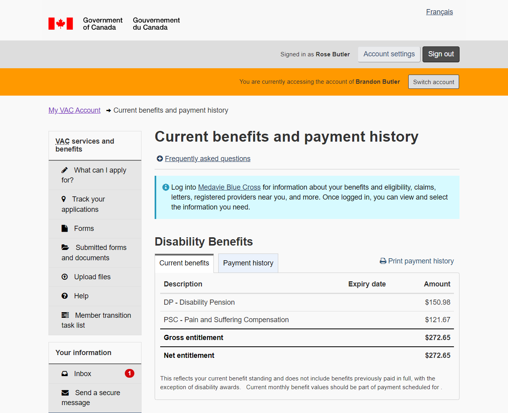
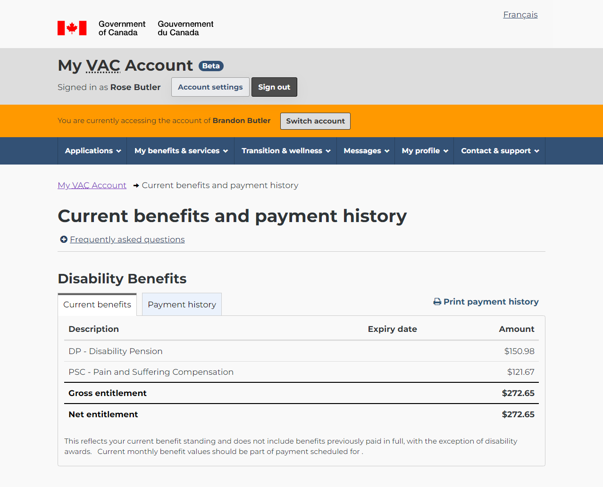
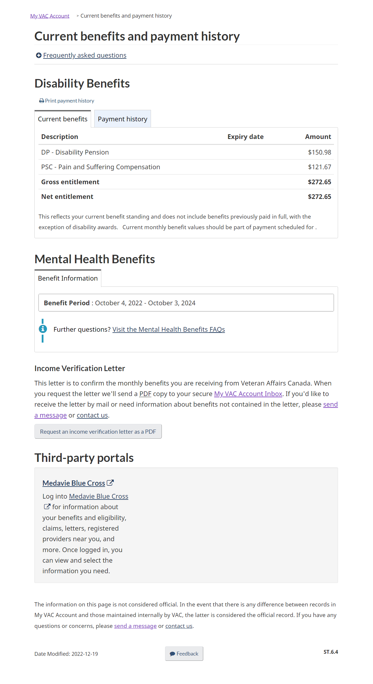

Redesigning MVA with GCWeb
MVA beta, redesign, style guides, and frameworks
On this page
Current MVA style status
MVA Legacy style
Historically, My VAC Account followed Web Experience Toolkit (WET) base theme for guidance on its look and feel.
The WET base theme is the basis for the MVA Legacy styles:
MVA Beta style
In 2019, veterans.gc.ca released a content style guide and a renewed visual theme. As its base, this redesign used the Canada.ca design system for guidance and leveraged GCWeb.
In 2022, we began the redesign of My VAC Account. The 2019 veterans.gc.ca visual theme influenced the design. However, we do not have the GCWeb theme for WET, leading to the following:
WET + GCWeb
In 2022, we also upgraded to the latest version of WET, meaning the GCWeb theme is an option for My VAC Account.
What is WET?
The Web Experience Toolkit is a collection of helpful web tools for enhancing website interactivity.
You can turn off WET by viewing the page in basic HTML. Just add ?wbdisable=true to any URL.
WET allows us to use pre-built templates and tools.
For instance, one of WET's tools is Datatables which enables interactive HTML tables:
| Title | Publication date | Department | News Type | Summary |
|---|---|---|---|---|
| Backgrounder: Seventeen Infrastructure Projects in ... | 2016-07-26 14:07:00 | Infrastructure Canada | Backgrounders | The governments of Canada and ... |
| Seventeen Infrastructure Projects in ... | 2016-07-26 14:07:00 | Infrastructure Canada | News Releases | Providing community residents ... |
What is GCWeb?
GCweb updates the WET base theme with patterns from the Canada.ca design system
For instance, GCWeb updates the alerts styles:
Alerts have an updated look and feel
Another example are updated checkbox styles:
WET features styled with GCWeb theme
GCWeb also includes some additional tools.
- Do action: Execute action, like filtering a table
- URL mapping: Slightly tweak page content based on URL query
- Field flow: Build interactive forms
The benefit of these tools being in the framework is that we build and maintain fewer custom scripts. We also inherit components and page templates as more are developed, tested, and released.
As well, according to Who has to use the Canada.ca design system from the Treasury Board of Canada Secretariat:
"[Veterans Affairs Canada] must apply Canada.ca design requirements for all their public-facing [...] digital services, regardless of the technology, ...or publishing platform..."
GCWeb Quick implementation guide
Related WET Projects: Centrally Deployed Template Solution (CDTS)
What is the Centrally Deployed Templates Solution (CDTS)?
"The purpose of the CDTS is [...] to deliver the presentation layer of the Canada.ca theme or Intranet.canada.ca theme [...] to web assets. It decouples the presentation layer from the business logic of a [..] web application and allows rapid updates across multiple networks."
CDTS can help us automate updating the assets for GCWeb and WET. It can template a header, menu, and footer; there is also documentation for search and page feedback.
It also provides some templates for applications (not just content sites) in the GCWeb theme.
Conclusion
As we move forward with the MVA beta and redesign, we should use the GCWeb (Canada.ca) theme. It's usability tested, well-maintained and growing. As well it's compliant with the Government of Canada's digital standards and makes it easier for My VAC Account to improve continuously.
UX and BAs deliver components to developers with defined content and states. They can be tested for accessibility and responsiveness development. Those components are documented in a My VAC Account design library.
Building interactions:
- Canada.ca's design system guides interactions. (Guidance on alerts)
- GCWeb theme is applied (GCWeb alert theme)
- WET provides the base functionality (WET alert base)
Writing web content:
- Canada.ca's style guide for guidance on writing for the web
- veterans.gc.ca style guide for VAC's audience
Quick visualization of MVA's Benefits and services page with GCWeb style.
Note: the header and footer have not been added.
What about the 2019 veterans.gc.ca visual style?
There is still a potential for My VAC Account to include this visual style while using GCWeb. GCWeb supports something they call thematics, like this Canada day example. This could help us distinguish our custom header/footer from the Canada.ca header/footer when clients are in the MVA application.
The Veterans Affairs Canada content style guide provides context on creating content for our audience.
Next steps
- Apply "Choosing what to improve" guide
- Applying GCWeb to My VAC Account's front door
- Applying GCWeb to My VAC Account header redesign
Additional ideas
- What if we leveraged GCWeb for MVA documentation?
- What if we created our own design library?
- What if we used charts/graph tools for things like sprint reporting?
- What if we could contribute MVA built tools back to WET/GCWeb?